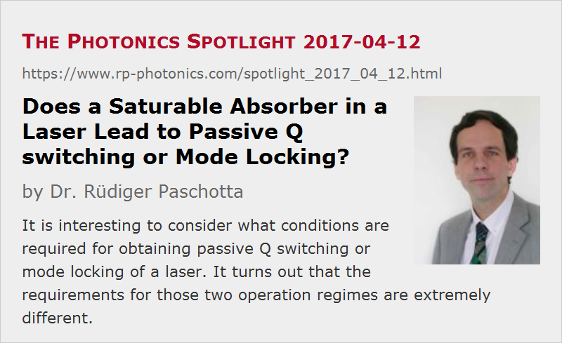

Does a Saturable Absorber in a Laser Lead to Passive Q switching or Mode Locking?
Posted on 2017-04-12 as a part of the Photonics Spotlight (available as e-mail newsletter!)
Permanent link: https://www.rp-photonics.com/spotlight_2017_04_12.html
Author: Dr. Rüdiger Paschotta, RP Photonics Consulting GmbH
Abstract: It is interesting to consider what conditions are required for obtaining passive Q switching or mode locking of a laser. It turns out that the requirements for those two operation regimes are extremely different.

It is well known that a saturable absorber incorporated into a laser resonator can cause passive mode locking or Q switching. That raises the question what operation mode we get in a particular case: mode locking, Q-switching, or even both at the same time? Or perhaps something else, e.g. some chaotic operation regime?
There can unfortunately not be totally simple answers to this question – laser physics is a complicated matter. However, I hope that the following discussion will be useful.
Passive Mode Locking
Clearly, passive mode locking is possible only if the recovery time of the saturable absorber is relatively short – usually far below the round-trip time of the laser resonator. Otherwise, the absorber could not possibly favor a circulating ultrashort pulse over longer pulses or even a continuous-wave background. With “favor” I mean to make sure that the circulating pulse has a higher net round-trip gain than any competing radiation.
The mentioned condition on the recovery time is necessary, but by far not sufficient for mode locking, and particularly not for stable mode locking. There can be all sorts of instabilities, arising from very different complications, so that the possibility of stable mode locking can depend on many factors – for example, on the intracavity chromatic dispersion, nonlinearities, spectral and other properties of the laser gain, and on further details of the saturable absorber. This is a rather complicated matter; it takes a lot of specialized know-how to understand and optimize passively mode-locked lasers. Note that stable passive mode locking implies that we have an intracavity field configuration, representing an ultrashort pulse (or sometimes multiple pulses) which is exactly reproduced after each full resonator round-trip, despite all influences of laser gain (with limited gain bandwidth), frequency-dependent losses, saturable absorption, chromatic dispersion and nonlinearities. Furthermore, that configuration must be a stable attractor, i.e., the system will evolve towards that stable state been being kicked somewhat away from it, e.g. by the influence of noise. One could hardly expect that there are simple criteria for fully managing such complicated nonlinear dynamics.
An easily understood and important aspect is that it must be possible by a single circulating pulse to substantially saturate the absorber. (Note that the absorber must be saturated again in every resonator round trip.) For that, the saturation energy of the absorber usually needs to be several times below the pulse energy, which is typically quite small – by far smaller than the typical pulse energy for Q switching. In a bulk laser, mode-locked with a semiconductor saturable absorber mirror (SESAM), the saturation energy is essentially the saturation fluence times the beam area: it can be reduced by focusing the intracavity laser beam more strongly on the absorber.
Q switching
The mechanism of pulse generation by passive Q switching is completely different from that of mode locking, and it requires completely different parameter values. Here, an essential requirement is that during some pulse build-up time we have a situation where the interaction of the intracavity energy with the laser gain medium and the saturable absorber leads to a rising net round-trip gain. This means that the loss reduction by saturation of the absorber needs to be stronger than the gain reduction due to gain saturation. More quantitatively, it means that the saturation energy of the absorber should be well below the saturation energy of the gain medium. It should also be well below the generated pulse energy, which is normally of the same order of magnitude as the gain saturation energy.
During the leading part of the pulse, the absorber is quite strongly saturated, so that the loss reduction cannot be increased much further; at the same time, the gain gets more and more saturated.
Fast recovery of the saturable absorber does not help the pulse generation process; in fact, it is better if the recovery time is at least several times the pulse duration. Otherwise, more energy would be consumed to keep the absorber saturated during the pulse. Therefore, the absorber recovery time should normally be many times longer than the resonator round-trip time. In other words, it should be by orders of magnitude longer than for mode locking.
Q-switched Mode Locking
In some cases, one obtains Q-switched mode locking, i.e., Q switching and mode locking at the same time. This means that the laser emits ultrashort pulses, where the pulse energy is not constant, but modulated according to a Q-switching envelope. So one gets bunches of such pulses, where each bunch may e.g. lasts for some nanoseconds, and the repetition rate of the pulses within each bunch is determined by the round-trip time.
One might think that one should actually always get that mode of operation, since the saturation energy of the absorber, as required for passive mode locking, is always far below the gain saturation energy. This is not true, however; in many cases, it is quite easy to obtain stable mode locking without any Q-switching instabilities – except perhaps for operation only slightly above the laser threshold. Curiously, this means that you might kill your absorber by operating the laser with reduced pump power: the maximum pulse energy and a bunch can then be far higher than the average pulse energy.
The theoretical analysis of the stability of the pulse energy (deciding between stable mode locking and Q-switched mode locking) is not particularly difficult. Essentially, one considers that one obtains an effective loss on the absorber which depends on the pulse energy. That pulse energy can be divided by the round-trip time to obtain an effective average power. One can now set up coupled differential equations for the evolution of that average power and the laser gain, obtaining quite similar equations as usually used for the analysis of simple Q switching. (Note that there is no dynamical equation for the excitation of the absorber, because that is already determined by the average power or pulse energy!) If you are interested in the details, read the following paper: C. Hönninger et al., “Q-switching stability limits of cw passive mode locking”, JOSA B 16 (1), 46 (1999).
Success Requires Understanding
Of course, carefully analyzing such issues in laser physics is not just interesting, but also an indispensable task for efficient laser development. When trying to develop a passively Q-switched or even mode-locked laser without such understanding, you may have a very frustrating time, because it is very difficult then to learn anything useful from failures of experiments. For example, you might find unstable operation but no hint how to fix that. Having wrong ideas about the suspected cause of the problem, you may try all sorts of remedies which have no chance to help you. And the parameter space is clearly too large to just try out every possible parameter combination.
This article is a posting of the Photonics Spotlight, authored by Dr. Rüdiger Paschotta. You may link to this page and cite it, because its location is permanent. See also the RP Photonics Encyclopedia.
Note that you can also receive the articles in the form of a newsletter or with an RSS feed.
Questions and Comments from Users
Here you can submit questions and comments. As far as they get accepted by the author, they will appear above this paragraph together with the author’s answer. The author will decide on acceptance based on certain criteria. Essentially, the issue must be of sufficiently broad interest.
Please do not enter personal data here; we would otherwise delete it soon. (See also our privacy declaration.) If you wish to receive personal feedback or consultancy from the author, please contact him e.g. via e-mail.
By submitting the information, you give your consent to the potential publication of your inputs on our website according to our rules. (If you later retract your consent, we will delete those inputs.) As your inputs are first reviewed by the author, they may be published with some delay.
|  |
If you like this page, please share the link with your friends and colleagues, e.g. via social media:
These sharing buttons are implemented in a privacy-friendly way!